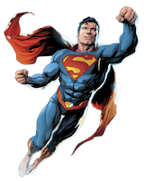
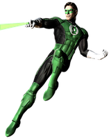
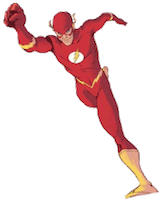

Superman

The character was created by writer Jerry Siegel and artist Joe Shuster, high school students living in Cleveland, Ohio, in 1933.

Green Lantern

The first Green Lantern character, Alan Scott, was created in 1940 to fight criminals in New York City with the aid of his magic ring.

Flash

One of DC Comics' most popular heroes and has been integral to the publisher's many reality-changing "crisis" storylines over the years.